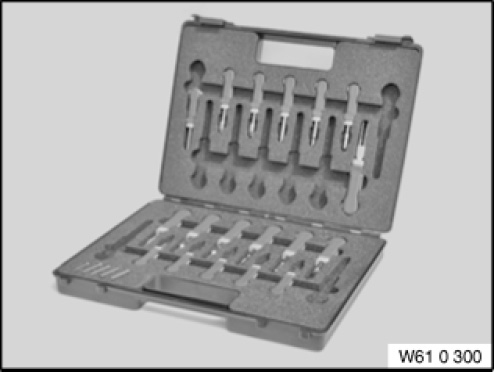

61 0 300 Release Tool
61 0 300 Release tool
0495382
Minimum set: Measuring and testing equipment
MP

NOTE: (release tool (set complete)) Replaces from 09/2005 special tool 61 1 150. From 06/2006 extended by tools 61 0 325 - 61 0 331 (see SI 02 05 06 294). From 02/2008 extended by 61 0 332 and 61 0 333 (see SI 02 03 08 440).
SI number: 02 05 05 (217)
Consisting of:
0495383
0495385
0495387
0495389
0495391
0495394
0495395
0495396
0495397
0495398
0495399
0495400
0495401
0495403
0495404
0495405
0495406
0495407
0495578
0495676
0495677
0495678
0495680
0496332
0496333